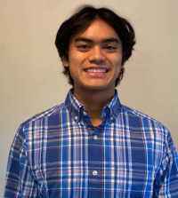

People
Kevin Middleton
I am an Associate Professor in the MU Division of Biological Sciences. My interests include Bayesian inference, Functional morphology, Biomechanics, and Statistical teaching. I’m an active member of the informal DataPhiles discussion group.

Previously I was a faculty member in the Department of Pathology and Anatomical Sciences in the University of Missouri School of Medicine. From 2007-2012, I was in the Department of Biology at California State University, San Bernardino. Prior to that I was a postdoctoral researcher at Brown University and the University of California, Riverside. In deep time, I was an undergraduate at Wake Forest University and then a doctoral student in the Department of Ecology and Evolutionary Biology at Brown University.
If you want to read about bird foot evolution, here’s a link to my dissertation: Morphology, evolution, and function of the avian hallux.
Graduate Researchers
Undergraduate Researchers
Adam Albright
- Mechanisms of insect flight, Imaging and CT scanning, Genetics
Josh Fajardo
- Locomotor biomechanics, machine learning, developing tools for studying mouse locomotion
- Biological Sciences Major

Maddy LaChance
- Cranial morphology in mice, Geometric morphometrics
- MU Cherng Summer Scholar
- University of Missouri, 2022

Lab Alumni
Graduate Researchers
Sarah Peacock
- Effects of light on bone phenotypes, Modern human variation, Human craniofacial morphology, Forensic anthropology
- PhD University of Missouri, 2019
- Currently an Assistant Teaching Professor at Northeastern University

Amanda Smolinsky
- Skeletal evolution, Locomotor evolution in vertebrates, Effects of loading on bone phenotypes, Functional morphology
- PhD University of Missouri, 2018
- Currently an Assistant Professor at St. Norbert College

Brittney Coats
- Energy regulation, Inflammatory role of adipose tissue
- MS CSU San Bernardino 2012
- PhD University of Chicago
- Currently at ITW David Speer Academy, Chicago, IL

Lauren English
- Morphometrics of pterosaurs
- MS CSU San Bernardino 2012
- PhD University of Texas at Austin
- Currently a museum scientist at University of California, Riverside
Susan Lujan
- Effects of atmospheric oxygen on growth in alligators
- MS CSU San Bernardino 2012
- Currently a lecturer at CSU San Bernardino
Undergraduate Researchers
Kayla Robinson (2021-2022)
- MU DBS Honors Student
Alec Wilken (2016-2019)
- Currently doctoral student at the University of Chicago
Caitlyn Smith (2016-2018)
- Currently a student in the University of Missouri School of Medicine
Kendra Lewis (2018)
- MU School of Medicine Summer Research Intern from Washington University in St. Louis
Rebecca Meyer (2016-2018)
- Currently in medical school at the Kentucky College of Medicine
Nick Bira (2014-2018)
- C3 Hughes Research Fellow
- Completing doctoral studies at Oregon State University
Kyle Kirkland (2015)
- MU School of Medicine Summer Research Intern from Michigan State University
Michael Sojka (2014-2015)
- C3 Hughes Research Fellow, MU School of Journalism
Tarrin Casey, MD (2014)
- Graduate from the University of Missouri School of Medicine
Diana Salas (2013)
- MU School of Medicine Summer Research Intern from Indiana University